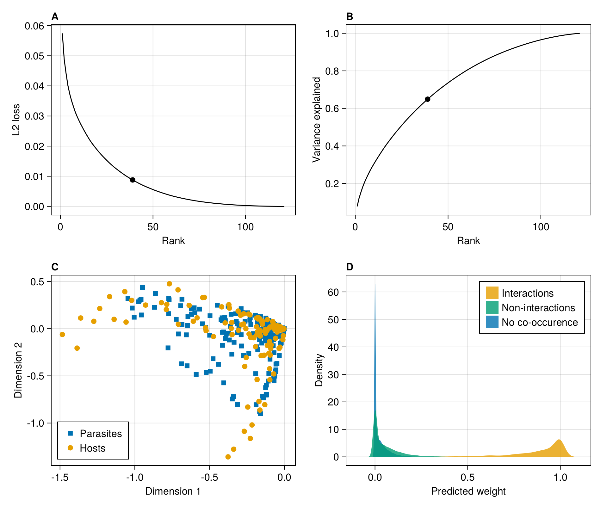
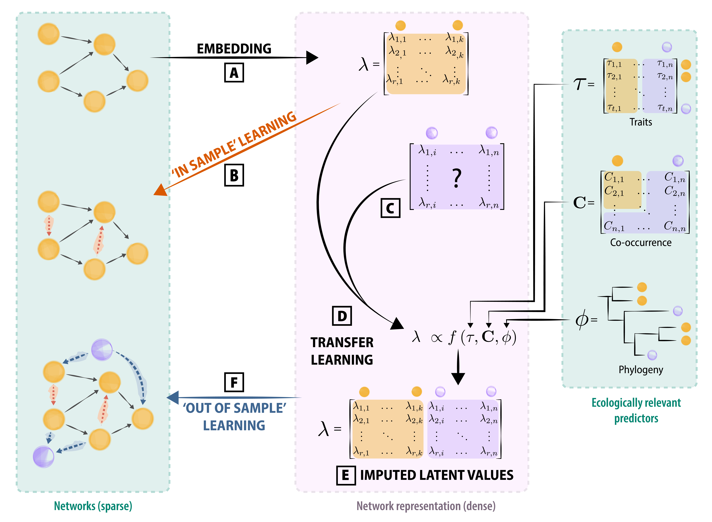

![]()

Introduction
The ability to infer potential biotic interactions could serve as a significant breakthrough in our ability to conceptualize networks over large spatial scales (Hortal et al. 2015). Reliable inferences would not only boost our understanding of the structure of species interaction networks, but also increase the amount of information that can be used for biodiversity management. In a recent overview of the field of ecological network prediction, Strydom et al. (2021) identified two challenges of interest to the prediction of interactions at large scales. First, there is a relative scarcity of relevant data in most places globally – which, due to the limitations in most predictive methods, restricts the ability to infer interactions to locations where it is least required (i.e. regions where we already have interaction data) leaving us unable to make inference in data scarce regions (where we most need it); second, accurate predictors are important for accurate predictions, and the lack of methods that can leverage a small amount of accurate data is a serious impediment to our predictive ability. In this contribution, we (i) highlight the power of viewing (and constructing) metawebs as probabilistic objects in the context of low-probability interactions, (ii) discuss how a family of machine learning tools (graph embeddings and transfer learning) can be used to overcome data limitations to metaweb inference, and (iii) highlight how the use of metawebs introduces important questions for the field of network ecology.
In most places, our most reliable biodiversity knowledge is that of a species pool where a set of potentially interacting species in a given area could occur: through the analysis of databases like the Global Biodiversity Information Facility (GBIF) or the International Union for the Conservation of Nature (IUCN), it is possible to construct a list of species for a region of interest. Following the definition of Dunne (2006), a metaweb is the ecological network analogue to the species pool; specifically, it inventories all potential interactions between species for a spatially delimited area (and so captures the \(\gamma\) diversity of interactions as per Poisot et al. (2012)). However, inferring the potential interactions between these species still remains a challenge. And yet, the metaweb holds valuable ecological information: it represents the joint effect of functional, phylogenetic, and macroecological processes (Morales-Castilla et al. 2015; Carlson et al. 2022; Morales-Castilla et al. 2021). Specifically, it represents the “upper bounds” on what the composition of the local networks, given a local species pool, can be (see e.g. McLeod et al. 2021); this information can help evaluate the ability of ecological assemblages to withstand the effects of, for example, climate change (Fricke et al. 2022). These local networks may be reconstructed given an appropriate knowledge of local species composition and provide information on the structure of networks at finer spatial scales. This has been done for example for tree-galler-parasitoid systems (Gravel et al. 2018), fish trophic interactions (Albouy et al. 2019), terrestrial tetrapod trophic interactions (J. Braga et al. 2019; O’Connor et al. 2020), and crop-pest networks (Grünig et al. 2020).
The metaweb itself is not a prediction of local networks at specific locations within the spatial area it covers: it will have a different structure, notably by having a larger connectance (see e.g. Wood et al. 2015) and complexity (see e.g. Galiana et al. 2022), than any of these local networks. Local networks (which capture the \(\alpha\) diversity of interactions) are a subset of the metaweb’s species and its realized interactions, and have been called “metaweb realizations” (Poisot, Stouffer, and Gravel 2015). Differences between local networks and their metawebs are due to chance, species abundance and co-occurrence, local environmental conditions, and local distribution of functional traits, among others. Specifically, although co-occurrence can be driven by interactions (Cazelles et al. 2016), co-occurrence alone is not a predictor of interactions (Blanchet, Cazelles, and Gravel 2020; Thurman et al. 2019), and therefore the lack of co-occurrence cannot be used to infer the lack of a feasible interaction. Yet, recent results by Saravia et al. (2021) strongly suggested that local (metaweb) realizations only respond weakly to local conditions: instead, they reflect constraints inherited by the structure of their metaweb. This sets up the core goal of predictive network ecology as the prediction of metaweb structure, as it is required to accurately produce downscaled, local predictions.
A metaweb is an inherently probabilistic object
Treating interactions as probabilistic (as opposed to binary) events is a more nuanced and realistic way to represent them. Dallas, Park, and Drake (2017) suggested that most interactions (links) in ecological networks are cryptic, i.e. uncommon or hard to observe. This argument echoes Jordano (2016): sampling ecological interactions is difficult because it requires first the joint observation of two species, and then the observation of their interaction. In addition, it is generally expected that weak or rare interactions will be more prevalent in networks than common or strong interactions (Csermely 2004); this is notably the case in food chains, wherein many weaker interactions are key to the stability of a system (Neutel, Heesterbeek, and de Ruiter 2002). In the light of these observations, we expect to see an over-representation of low-probability (hereafter rare) interactions under a model that accurately predicts interaction probabilities.
Yet, the original metaweb definition, and indeed most past uses of metawebs, was based on the presence/absence of interactions. Moving towards probabilistic metawebs, by representing interactions as Bernoulli events (see e.g. Poisot et al. 2016), offers the opportunity to weigh these rare interactions appropriately. The inherent plasticity of interactions is important to capture: there have been documented instances of food webs undergoing rapid collapse/recovery cycles over short periods of time (e.g. Pedersen et al. 2017). Furthermore, because the structure of the metaweb cannot be known in advance, it is important to rely on predictive tools that do not assume a specific network topology for link prediction (Gaucher, Klopp, and Robin 2021), but are able to work on generalizations of the network that capture statistical processes giving it its structure. These considerations emphasize why metaweb predictions should focus on quantitative (preferentially probabilistic) predictions, and this should constrain the suite of models that are appropriate for prediction. Binary classifiers based on probabilities have an extremely robust methodology to validate them, and this applies naturally to the prediction of interactions (Poisot 2023).
It is important to recall that a metaweb is intended as a catalogue of all potential (feasible) interactions, which is then filtered for a given application (Morales-Castilla et al. 2015). It is therefore important to separate the interactions that happen “almost surely” (repeated observational data), “almost never” (repeated lack of evidence or evidence that the link is forbidden through e.g. trait mis-match), and interactions with a probability that lays somewhere in between (Catchen et al. 2023). Although metawebs can (and in practice likely do) include false positives, these are statistically negligible compared to the false negatives. Furthermore, Strydom et al. (2022) shows that t-SVD embedding is extremely robust to (and able to detect) the presence of false positives. In a sense, because most ecological interactions are elusive, we should consider the direct consequences this has on sampling: once the common interactions are documented, the effort required in documenting each rare interaction will increase exponentially (Jordano 2016). Recent proposals in other fields relying on machine learning approaches emphasize the idea that algorithms meant to predict, through the assumption that they approximate the process generating the data, can also act as data generators (Hoffmann et al. 2019). High quality observational data can be used to infer core rules underpinning network structure, and be supplemented with synthetic data coming from predictive models trained on them, thereby increasing the volume of information available for analysis. Indeed, Strydom et al. (2021) suggested that knowing the metaweb may render the prediction of local networks easier, because it fixes an “upper bound” on which interactions can exist. In this context, a probabilistic metaweb represents an aggregation of informative priors on the biological feasibility of interactions, which is usually hard to obtain yet has possibly the most potential to boost our predictive ability of local networks (Bartomeus 2013; Bartomeus et al. 2016). This would represent a departure from simple rules expressed at the network scale (e.g. Williams and Martinez 2000) to a view of network prediction based on learning the rules that underpin interactions and their variability (Anubhav Gupta, Furrer, and Petchey 2022).

Graph embedding offers promises for the inference of potential interactions
Graph (or network) embedding (Figure 1) is a family of machine learning techniques, whose main task is to learn a mapping function from a discrete graph to a continuous domain (Arsov and Mirceva 2019; Chami et al. 2022). Their main goal is to learn a low dimensional vector representation of the graph (embeddings), such that its key properties (e.g. local or global structures) are retained in the embedding space (Yan et al. 2005). The embedding space may, but will not necessarily, have lower dimensionality than the graph. Ecological networks are promising candidates for the routine application of embeddings, as they tend to possess a shared structural backbone (see e.g. Bramon Mora et al. 2018), which hints at structural invariants in empirical data. Assuming that these structural invariants are common enough, they would dominate the structure of networks, and therefore be adequately captured by the first (lower) dimensions of an embedding, without the need to measure derived aspects of their structure (e.g. motifs, paths, modularity, …).
Graph embedding produces latent variables (but not traits)
Before moving further, it is important to clarify the epistemic status of node values derived from embeddings: specifically, they are not functional traits, and therefore should not be interpreted in terms of effects or responses. As per the framework of Malaterre et al. (2019), these values neither derive from, nor result in, changes in organismal performance, and should therefore not be used to quantify e.g. functional diversity. This holds true even when there are correlations between latent values and functional traits: although these enable an ecological discussion of how traits condition the structure of the network, the existence of a statistical relationship does not elevate the latent values to the status of functional traits.
Rather than directly predicting biological rules (see e.g. Pichler et al. 2020 for an overview), which may be confounded by the sparse nature of graph data, learning embeddings works in the low-dimensional space that maximizes information about the network structure. This approach is further justified by the observation, for example, that the macro-evolutionary history of a network is adequately represented by some graph embeddings [Random dot product graphs (RDPG); see Dalla Riva and Stouffer (2016)]. In a recent publication, Strydom et al. (2022) have used an embedding (based on RDPG) to project a metaweb of trophic interactions between European mammals, and transferred this information to mammals of Canada, using the phylogenetic distance between related clades to infer the values in the latent subspace into which the European metaweb was projected. By performing the RDPG step on re-constructed values, this approach yields a probabilistic trophic metaweb for mammals of Canada based on knowledge of European species, despite a limited (\(\approx\) 5%) taxonomic overlap, and illustrates how the values derived from an embedding can be used for prediction without being “traits” of the species they represent.
Ecological networks are good candidates for embedding
Ecological networks are inherently low-dimensional objects, and can be adequately represented with less than ten dimensions (M. P. Braga et al. 2021; Eklöf et al. 2013; J. Braga et al. 2019). Simulation results by Botella et al. (2022) suggested that there is no dominant method to identify architectural similarities between networks: multiple approaches need to be tested and compared to the network descriptor of interest on a problem-specific basis. This matches previous results on graph embedding, wherein different embedding algorithms yield different network embeddings (Goyal and Ferrara 2018), calling for a careful selection of the problem-specific approach to use. Additionally, Ghasemian et al. (2020) suggest that in some cases, nodes embeddings can be outperformed by other methods, re-inforcing the need to thoroughly select the appropriate data analysis technique. In Table 1, we present a selection of common graph and node embedding methods, alongside examples of their use to predict interactions or statistical associations between species. These methods rely largely on linear algebra or pseudo-random walks on graphs. All forms of embeddings presented in Table 1 share the common property of summarizing their objects into (sets of) dense feature vectors, that capture the overall network structure, pairwise information on nodes, and emergent aspects of the network, in a compressed way (i.e. with some information loss, as we later discuss in the illustration). Node embeddings tend to focus on maintaining pairwise relationships (i.e. species interactions), while graph embeddings focus on maintaining the network structure (i.e. emergent properties). Nevertheless, some graph embedding techniques (like RDPG, see e.g. Wu, Palmer, and Deford 2021) will provide high-quality node-level embeddings while also preserving network structure.
Graph embeddings can serve as a dimensionality reduction method. For example, RDPG (Strydom et al. 2022) and t-SVD [truncated Singular Value Decomposition; Poisot et al. (2021)] typically embed networks using fewer dimensions than the original network [the original network has as many dimensions as species, and as many informative dimensions as trophically unique species; Strydom, Dalla Riva, and Poisot (2021)]. However, this is not necessarily the case – indeed, one may perform a PCA (a special case of SVD) to project the raw data into a subspace that improves the efficacy of t-SNE [t-distributed stochastic neighbor embedding; Maaten (2009)]. There are many dimensionality reductions (Anowar, Sadaoui, and Selim 2021) that can be applied to an embedded network should the need for dimensionality reduction (for example for data visualization) arise. In brief, many graph embeddings can serve as dimensionality reduction steps, but not all do, neither do all dimensionality reduction methods provide adequate graph embedding capacities. In the next section (and Figure 1), we show how the amount of dimensionality reduction can affect the quality of the embedding.
| Method | Object | Technique | Reference | Application |
|---|---|---|---|---|
| t-SNE | nodes | statistical divergence | Hinton and Roweis (2002) | (Cieslak et al. 2020, species-environment responses \(^a\)) (Gibb et al. 2021, host-virus network representation) |
| LINE | nodes | stochastic gradient descent | Tang et al. (2015) | |
| SDNE | nodes | gradient descent | D. Wang, Cui, and Zhu (2016) | |
| node2vec | nodes | stochastic gradient descent | Grover and Leskovec (2016) | |
| HARP | nodes | meta-strategy | H. Chen et al. (2017) | |
| DMSE | joint nodes | deep neural network | D. Chen et al. (2017) | (D. Chen et al. 2017, species-environment interactions \(^b\)) |
| graph2vec | sub-graph | skipgram network | Narayanan et al. (2017) | |
| RDPG | graph | SVD | Young and Scheinerman (2007) | (Dalla Riva and Stouffer 2016, trophic interactions) (Poisot et al. 2021, host-virus network prediction) |
| GLEE | graph | Laplacian eigenmap | Torres, Chan, and Eliassi-Rad (2020) | |
| DeepWalk | graph | stochastic gradient descent | Perozzi, Al-Rfou, and Skiena (2014) | (Wardeh, Baylis, and Blagrove 2021, host-virus interactions) |
| GraphKKE | graph | stochastic differential equation | Melnyk et al. (2020) | (Melnyk et al. 2020, microbiome species associations \(^a\)) |
| FastEmbed | graph | eigen decomposition | Ramasamy and Madhow (2015) | |
| PCA | graph | eigen decomposition | Surendran (2013) | (Strydom et al. 2021, host-parasite interactions) |
| Joint methods | multiple graphs | multiple strategies | S. Wang et al. (2021) |
The popularity of graph embedding techniques in machine learning is more than the search for structural invariants: graphs are discrete objects, and machine learning techniques tend to handle continuous data better. Bringing a sparse graph into a continuous, dense vector space (Xu 2021) opens up a broader variety of predictive algorithms, notably of the sort that are able to predict events as probabilities (Murphy 2022). Furthermore, the projection of the graph itself is a representation that can be learned; Runghen, Stouffer, and Dalla Riva (2021), for example, used a neural network to learn the embedding of a network in which not all interactions were known, based on the nodes’ metadata. This example has many parallels in ecology (see Figure 1 C), in which node metadata can be represented by phylogeny, abundance, or functional traits. Using phylogeny as a source of information assumes (or strives to capture) the action of evolutionary processes on network structure, which at least for networks have been well documented (M. P. Braga et al. 2021; Dalla Riva and Stouffer 2016; Eklöf and Stouffer 2016; D. B. Stouffer et al. 2007; D. B. Stouffer et al. 2012); similarly, the use of functional traits assumes that interactions can be inferred from the knowledge of trait-matching rules, which is similarly well supported in the empirical literature (Bartomeus 2013; Bartomeus et al. 2016; Goebel et al. 2023; Gravel et al. 2013). Relating this information to an embedding rather than a list of network measures would allow to capture their effect on the more fundamental aspects of network structure; conversely, the absence of a phylogenetic or functional signal may suggest that evolutionary/trait processes are not strong drivers of network structure, therefore opening a new way to perform hypothesis testing.
An illustration of metaweb embedding
In this section, we illustrate the embedding of a collection of bipartite networks collected by Hadfield et al. (2014), using t-SVD and RDPG. Briefly, an RDPG decomposes a network into two subspaces (left and right), which are matrices that when multiplied give an approximation of the original network. RDPG has the particularly desirable properties of being a graph embedding technique that produces relevant node-level feature vectors, and provides good approximations of graphs with varied structures (Athreya et al. 2017). The code to reproduce this example is available as supplementary material (note, for the sake of comparison, that Strydom et al. 2021 have an example using embedding through PCA followed by prediction using a deep neural network on the same dataset). The resulting (binary) metaweb \(\mathcal{M}\) has 2131 interactions between 206 parasites and 121 hosts, and its adjacency matrix has full rank (i.e. it represents a space with 121 dimensions). All analyses were done using Julia (Bezanson et al. 2017) version 1.7.2, Makie.jl (Danisch and Krumbiegel 2021), and EcologicalNetworks.jl (Poisot et al. 2019).
In Figure 2, we focus on some statistical checks of the embedding. In panel A, we show that the averaged \(L_2\) loss (i.e. the mean of squared errors) between the empirical and reconstructed metaweb decreases when the number of dimensions (rank) of the subspace increases, with an inflection at 39 dimensions (out of 120 initially) according to the finite differences method. As discussed by Runghen, Stouffer, and Dalla Riva (2021), there is often a trade-off between the number of dimensions to use (more dimensions are more computationally demanding) and the quality of the representation. In panel B, we show the increase in cumulative variance explained at each rank, and visualize that using 39 ranks explains about 70% of the variance in the empirical metaweb. This provides different information from the \(L_2\) loss (which is averaged across interactions), as it works on the eigenvalues of the embedding, and therefore captures higher-level features of the network. In panel C, we show positions of hosts and parasites on the first two dimensions of the left and right subspaces. Note that these values largely skew negative, because the first dimensions capture the coarse structure of the network: most pairs of species do not interact, and therefore have negative values. Finally in panel D, we show the predicted weight (i.e. the result of the multiplication of the RDGP subspaces at a rank of 39) as a function of whether the interactions are observed, not-observed, or unknown due to lack of co-occurrence in the original dataset. This reveals that the observed interactions have higher predicted weights, although there is some overlap; the usual approach to identify potential interactions based on this information would be a thresholding analysis, which is outside the scope of this manuscript (and is done in the papers cited in this illustration). Because the values returned from RDPG are not bound to the unit interval, we performed a clamping of the weights to the unit space, showing a one-inflation in documented interactions, and a zero-inflation in other species pairs. Panel D specifically shows that species pairs with no documented co-occurrence have weights that are not distinguishable from species pairs with no documented interactions; in other words, looking at the embedding, species that do not co-occur are not easily distinguished from species that do not interact. This suggests that (as befits a host-parasite model) the ability to interact is a strong predictor of co-occurrence.
In Figure 3, we relate the values of latent variables for hosts to different ecologically-relevant data; we can perform this additional step, because the results presented in Figure 2 show that we can extract an embedding of the metaweb that captures enough variance to be relevant. Importantly, this is true for both \(L_2\) loss (indicating that RDPG is able to capture pairwise processes) and the cumulative variance explained (indicating that RDPG is able to capture network-level structure), which suggests that these approaches may allow to predict interactions and network structure. In panel A, we show that host with a higher value on the first dimension have fewer parasites. This relates to the body size of hosts in the PanTHERIA database (Jones et al. 2009), as shown in panel B: interestingly, the position on the first axis is only weakly correlated to body mass of the host; this matches well established results showing that body size/mass is not always a direct predictor of parasite richness in terrestrial mammals (Morand and Poulin 1998), a result we observe in panel C. Finally, in panel D, we can see how different taxonomic families occupy different positions on the first axis, with e.g. Sciuridae being biased towards higher values. These results show how we can look for ecological informations in the output of network embeddings, which can further be refined into the selection of predictors for transfer learning.
The metaweb merges ecological hypotheses and practices
Metaweb inference seeks to provide information about the interactions between species at a large spatial scale, typically a scale large enough to be considered of biogeographic relevance (indeed, many of the examples covered in the introduction span areas larger than a country, some of them global). But as Herbert (1965) rightfully pointed out, “[y]ou can’t draw neat lines around planet-wide problems”; any inference of a metaweb must therefore contend with several novel, interwoven, families of problems. In this section, we outline three that we think are particularly important, and discuss how they may be addressed with subsequent data analysis or simulations, and how they emerge in the specific context of using embeddings; some of these issues are related to the application of these methods at the science-policy interface. Adressing these considerations as part of the methodological discussion is particularly important, as the construction of metawebs can perpetuate legacies of biases in data (Box 2).
Identifying the properties of the network to embed
If the initial metaweb is too narrow in scope, notably from a taxonomic point of view, the chances decrease of finding another area with enough related species (through phylogenetic relatedness or similarity of functional traits) to make a reliable inference. This is because transfer requires similarity (Figure 1). A diagnostic for the lack of similar species would likely be large confidence intervals during estimation of the values in the low-rank space. In other words, the representation of the original graph is difficult to transfer to the new problem. Alternatively, if the initial metaweb is too large (taxonomically), then the resulting embeddings would need to represent interactions between taxonomic groups that are not present in the new location. This would lead to a much higher variance in the starting dataset, and to under-dispersion in the target dataset, resulting in the potential under or over estimation of the strength of new predicted interactions. Llewelyn et al. (2022) provided compelling evidence for these situations by showing that, even at small spatial scales, the transfer of information about interactions becomes more challenging when areas rich with endemic species are considered. The lack of well documented metawebs is currently preventing the development of more concrete guidelines. The question of phylogenetic relatedness and distribution is notably relevant if the metaweb is assembled in an area with mostly endemic species (e.g. a system that has undergone recent radiation or that has remained in isolation for a long period of time might not have an analogous system with which to draw knowledge from), and as with every predictive algorithm, there is room for the application of our best ecological judgement. Because this problem relates to distribution of species in the geographic or phylogenetic space, it can certainly be approached through assessing the performance of embedding transfer in simulated starting/target species pools.
Identifying the scope of the prediction to perform
The area for which we seek to predict the metaweb should determine the species pool on which the embedding is performed. Metawebs can be constructed by assigning interactions in a list of species within specific regions. The upside of this approach is that information relevant for the construction of this dataset is likely to exist, as countries usually set conservation goals at the national level (Buxton et al. 2021), and as quantitative instruments are consequently designed to work at these scales (Turak et al. 2017); specific strategies are often enacted at smaller scales, nested within a specific country (Ray, Grimm, and Olive 2021). However, there is no guarantee that these arbitrary boundaries are meaningful. In fact, we do not have a satisfying answer to the question of “where does an ecological network stop?”, the answer to which would dictate the spatial span to embed/predict. Recent results by Martins et al. (2022) suggested that networks are shaped within eco-regions, with abrupt structural transitions from an eco-region to the next. Should this trend hold generally, this would provide an ecologically-relevant scale at which metawebs can be downscaled and predicted. Other solutions could leverage network-area relationships to identify areas in which networks are structurally similar (see e.g. Fortin, Dale, and Brimacombe 2021; Galiana et al. 2018, 2022). Both of these solutions require ample pre-existing information about the network in space. Nevertheless, the inclusion of species for which we have data but that are not in the right spatial extent may improve the performance of approaches based on embedding and transfer, if they increase the similarity between the target and destination network. This proposal can specifically be evaluated by adding nodes to the network to embed, and assessing the performance of predictive models (see e.g. Llewelyn et al. 2022).
Putting models in their context
Predictive approaches in ecology, regardless of the scale at which they are deployed and the intent of their deployment, originate in the framework that contributed to the ongoing biodiversity crisis (Adam 2014) and reinforced environmental injustice (Choudry 2013; Domínguez and Luoma 2020). The risk of embedding this legacy in our models is real, especially when the impact of this legacy on species pools is being increasingly documented. This problem can be addressed by re-framing the way we interact with models, especially when models are intended to support conservation actions. Particularly on territories that were traditionally stewarded by Indigenous people, we must interrogate how predictive approaches and the biases that underpin them can be put to task in accompanying Indigenous principles of land management (Eichhorn, Baker, and Griffiths 2019; No’kmaq et al. 2021). The discussion of “algorithm-in-the-loop” approaches that is now pervasive in the machine learning community provides examples of why this is important. Human-algorithm interactions are notoriously difficult and can yield adverse effects (Green and Chen 2019; Stevenson and Doleac 2021), suggesting the need to systematically study them for the specific purpose of, here, biodiversity governance. Improving the algorithmic literacy of decision makers is part of the solution (e.g. Lamba et al. 2019; Mosebo Fernandes et al. 2020), as we can reasonably expect that model outputs will be increasingly used to drive policy decisions (Weiskopf et al. 2022). Our discussion of these approaches need to go beyond the technical and statistical, and into the governance consequences they can have. To embed data also embeds historical and contemporary biases that acted on these data, both because they shaped the ecological processes generating them (see Box 2), and the global processes leading to their measurement and publication. For a domain as vast as species interaction networks, these biases exist at multiple scales along the way, and a challenge for prediction is not only to develop (or adopt) new quantitative tools, but to assess the behavior of these tools in the proper context.
Conclusion
Although promising, the application of embeddings to metaweb prediction still involved several challenges. First, there is a need to understand how to define a metaweb as a single, cohesive, unit of ecological organisation. This is likely to have very different answers based on the specific taxonomic group, temporal and spatial resolution, and question being investigated. Second, there is a need to understand the scale at which these predictions are relevant. Although we have documented many cases of using embedding to fill gaps in the metaweb, these techniques can likely be brought into a spatial (and possibly temporal) context. The validation of these predictions will have to proceed jointly with empirical sampling of interactions, but also with the design of downsampling methods. Finally, there is a need for a greater understanding of how biases in the data propagate to the predictions. Because the volume of metawebs is currently low, and because graph embeddings have not been commonly applied, we anticipate that this discussion will take place organically in the coming years.
Acknowledgements: We acknowledge that this study was conducted on land within the traditional unceded territory of the Saint Lawrence Iroquoian, Anishinabewaki, Mohawk, Huron-Wendat, and Omàmiwininiwak nations. We thank Victoria Hemming for feedback on this manuscript. TP, TS, DC, and LP received funding from the Canadian Institute for Ecology & Evolution. FB is funded by the Institute for Data Valorization (IVADO). TS, SB, and TP are funded by a donation from the Courtois Foundation. M-JF acknowledges funding from NSERC Discovery Grant and NSERC CRC. RR is funded by New Zealand’s Biological Heritage Ngā Koiora Tuku Iho National Science Challenge, administered by New Zealand Ministry of Business, Innovation, and Employment. BM is funded by the NSERC Alexander Graham Bell Canada Graduate Scholarship and the FRQNT master’s scholarship. LP acknowledges funding from NSERC Discovery Grant (NSERC RGPIN-2019-05771). TP acknowledges financial support from the Fondation Courtois, and NSERC through the Discovery Grants and Discovery Accelerator Supplement programs. MJF is supported by an NSERC PDF and an RBC Post-Doctoral Fellowship.
Conflict of interest: The authors have no conflict of interests to disclose
Authors’ contributions: TS and TP conceived the ideas discussed in the manuscript. All authors contributed to writing and editing the manuscript.
Data availability: The code to collect the data use in figures is distributed as part of the Supplementary Material.
References
Adam, Rachelle. 2014. Elephant Treaties: The Colonial Legacy of the Biodiversity Crisis. UPNE.
Albouy, Camille, Philippe Archambault, Ward Appeltans, Miguel B. Araújo, David Beauchesne, Kevin Cazelles, Alyssa R. Cirtwill, et al. 2019. “The Marine Fish Food Web Is Globally Connected.” Nature Ecology & Evolution 3 (8, 8): 1153–61. https://doi.org/10.1038/s41559-019-0950-y.
Anowar, Farzana, Samira Sadaoui, and Bassant Selim. 2021. “Conceptual and Empirical Comparison of Dimensionality Reduction Algorithms (PCA, KPCA, LDA, MDS, SVD, LLE, ISOMAP, LE, ICA, t-SNE).” Computer Science Review 40 (May): 100378. https://doi.org/10.1016/j.cosrev.2021.100378.
Arsov, Nino, and Georgina Mirceva. 2019. “Network Embedding: An Overview.” http://arxiv.org/abs/1911.11726.
Athreya, Avanti, Donniell E. Fishkind, Keith Levin, Vince Lyzinski, Youngser Park, Yichen Qin, Daniel L. Sussman, Minh Tang, Joshua T. Vogelstein, and Carey E. Priebe. 2017. “Statistical Inference on Random Dot Product Graphs: A Survey.” arXiv. http://arxiv.org/abs/1709.05454.
Barrett, Scott. 2005. Environment and Statecraft: The Strategy of Environmental Treaty-Making. 1st ed. Oxford University PressOxford. https://doi.org/10.1093/0199286094.001.0001.
Bartomeus, Ignasi. 2013. “Understanding Linkage Rules in Plant-Pollinator Networks by Using Hierarchical Models That Incorporate Pollinator Detectability and Plant Traits.” PloS One 8 (7): e69200. http://journals.plos.org/plosone/article?id=10.1371/journal.pone.0069200.
Bartomeus, Ignasi, Dominique Gravel, Jason M. Tylianakis, Marcelo A. Aizen, Ian A. Dickie, and Maud Bernard-Verdier. 2016. “A Common Framework for Identifying Linkage Rules Across Different Types of Interactions.” Functional Ecology 30 (12): 1894–1903. http://onlinelibrary.wiley.com/doi/10.1111/1365-2435.12666/full.
Bezanson, Jeff, Alan Edelman, Stefan Karpinski, and Viral B. Shah. 2017. “Julia: A Fresh Approach to Numerical Computing.” SIAM Review 59 (1): 65–98. https://doi.org/10.1137/141000671.
Blanchet, F. Guillaume, Kevin Cazelles, and Dominique Gravel. 2020. “Co-Occurrence Is Not Evidence of Ecological Interactions.” Ecology Letters.
Bohan, David A., Corinne Vacher, Alireza Tamaddoni-Nezhad, Alan Raybould, Alex J. Dumbrell, and Guy Woodward. 2017. “Next-Generation Global Biomonitoring: Large-scale, Automated Reconstruction of Ecological Networks.” Trends in Ecology & Evolution, March. https://doi.org/10.1016/j.tree.2017.03.001.
Botella, Christophe, Stéphane Dray, Catherine Matias, Vincent Miele, and Wilfried Thuiller. 2022. “An Appraisal of Graph Embeddings for Comparing Trophic Network Architectures.” Methods in Ecology and Evolution 13 (1): 203–16. https://doi.org/10.1111/2041-210X.13738.
Braga, João, Laura J. Pollock, Ceres Barros, Núria Galiana, José M. Montoya, Dominique Gravel, Luigi Maiorano, et al. 2019. “Spatial Analyses of Multi-Trophic Terrestrial Vertebrate Assemblages in Europe.” Global Ecology and Biogeography 28 (11): 1636–48. https://doi.org/10.1111/geb.12981.
Braga, Mariana P., Niklas Janz, Sören Nylin, Fredrik Ronquist, and Michael J. Landis. 2021. “Phylogenetic Reconstruction of Ancestral Ecological Networks Through Time for Pierid Butterflies and Their Host Plants.” Ecology Letters n/a (n/a). https://doi.org/10.1111/ele.13842.
Bramon Mora, Bernat, Dominique Gravel, Luis J. Gilarranz, Timothée Poisot, and Daniel B. Stouffer. 2018. “Identifying a Common Backbone of Interactions Underlying Food Webs from Different Ecosystems.” Nature Communications 9 (1): 2603. https://doi.org/10.1038/s41467-018-05056-0.
Buxton, Rachel T., Joseph R. Bennett, Andrea J. Reid, Charles Shulman, Steven J. Cooke, Charles M. Francis, Elizabeth A. Nyboer, et al. 2021. “Key Information Needs to Move from Knowledge to Action for Biodiversity Conservation in Canada.” Biological Conservation 256 (April): 108983. https://doi.org/10.1016/j.biocon.2021.108983.
Carlson, Colin J., Gregory F. Albery, Cory Merow, Christopher H. Trisos, Casey M. Zipfel, Evan A. Eskew, Kevin J. Olival, Noam Ross, and Shweta Bansal. 2022. “Climate Change Increases Cross-Species Viral Transmission Risk.” Nature 607 (7919): 555–62. https://doi.org/10.1038/s41586-022-04788-w.
Catchen, Michael, Timothée Poisot, Laura Pollock, and Andrew Gonzalez. 2023. “The Missing Link: Discerning True from False Negatives When Sampling Species Interaction Networks.” Preprint. EcoEvoRXiV. https://doi.org/10.32942/X2DW22.
Cazelles, Kévin, Miguel B. Araújo, Nicolas Mouquet, and Dominique Gravel. 2016. “A Theory for Species Co-Occurrence in Interaction Networks.” Theoretical Ecology 9 (1): 39–48. https://doi.org/10.1007/s12080-015-0281-9.
Chami, Ines, Sami Abu-El-Haija, Bryan Perozzi, Christopher Ré, and Kevin Murphy. 2022. “Machine Learning on Graphs: A Model and Comprehensive Taxonomy.” Journal of Machine Learning Research 23 (89): 1–64. http://jmlr.org/papers/v23/20-852.html.
Chen, Di, Yexiang Xue, Daniel Fink, Shuo Chen, and Carla P. Gomes. 2017. “Deep Multi-species Embedding,” 3639–46. https://www.ijcai.org/proceedings/2017/509.
Chen, Haochen, Bryan Perozzi, Yifan Hu, and Steven Skiena. 2017. “HARP: Hierarchical Representation Learning for Networks.” http://arxiv.org/abs/1706.07845.
Choudry, Aziz. 2013. “Saving Biodiversity, for Whom and for What? Conservation NGOs, Complicity, Colonialism and Conquest in an Era of Capitalist Globalization.” In NGOization: Complicity, Contradictions and Prospects, 24–44. Bloomsbury Publishing.
Cieslak, Matthew C., Ann M. Castelfranco, Vittoria Roncalli, Petra H. Lenz, and Daniel K. Hartline. 2020. “T-Distributed Stochastic Neighbor Embedding (t-SNE): A Tool for Eco-Physiological Transcriptomic Analysis.” Marine Genomics 51 (June): 100723. https://doi.org/10.1016/j.margen.2019.100723.
Csermely, Peter. 2004. “Strong Links Are Important, but Weak Links Stabilize Them.” Trends in Biochemical Sciences 29 (7): 331–34. https://doi.org/10.1016/j.tibs.2004.05.004.
Dalla Riva, Giulio V., and Daniel B. Stouffer. 2016. “Exploring the Evolutionary Signature of Food Webs’ Backbones Using Functional Traits.” Oikos 125 (4): 446–56. https://doi.org/10.1111/oik.02305.
Dallas, Tad, Andrew W. Park, and John M. Drake. 2017. “Predicting Cryptic Links in Host-Parasite Networks.” PLOS Computational Biology 13 (5): e1005557. https://doi.org/10.1371/journal.pcbi.1005557.
Danisch, Simon, and Julius Krumbiegel. 2021. “Makie.jl: Flexible High-Performance Data Visualization for Julia.” Journal of Open Source Software 6 (65): 3349. https://doi.org/10.21105/joss.03349.
Domínguez, Lara, and Colin Luoma. 2020. “Decolonising Conservation Policy: How Colonial Land and Conservation Ideologies Persist and Perpetuate Indigenous Injustices at the Expense of the Environment.” Land 9 (3, 3): 65. https://doi.org/10.3390/land9030065.
Dunne, Jennifer A. 2006. “The Network Structure of Food Webs.” In Ecological Networks: Linking Structure and Dynamics, edited by Jennifer A Dunne and Mercedes Pascual, 27–86. Oxford University Press.
Eero, Margit, Jan Dierking, Christoph Humborg, Emma Undeman, Brian R MacKenzie, Henn Ojaveer, Tiina Salo, and Friedrich Wilhelm Köster. 2021. “Use of Food Web Knowledge in Environmental Conservation and Management of Living Resources in the Baltic Sea.” ICES Journal of Marine Science 78 (8): 2645–63. https://doi.org/10.1093/icesjms/fsab145.
Eichhorn, Markus P., Kate Baker, and Mark Griffiths. 2019. “Steps Towards Decolonising Biogeography.” Frontiers of Biogeography 12 (1): 1–7. https://doi.org/10.21425/F5FBG44795.
Eklöf, Anna, Ute Jacob, Jason Kopp, Jordi Bosch, Rocío Castro-Urgal, Natacha P. Chacoff, Bo Dalsgaard, et al. 2013. “The Dimensionality of Ecological Networks.” Ecology Letters 16 (5): 577–83. https://doi.org/10.1111/ele.12081.
Eklöf, Anna, and Daniel B. Stouffer. 2016. “The Phylogenetic Component of Food Web Structure and Intervality.” Theoretical Ecology 9 (1): 107–15. https://doi.org/10.1007/s12080-015-0273-9.
Fortin, Marie-Josée, Mark R. T. Dale, and Chris Brimacombe. 2021. “Network Ecology in Dynamic Landscapes.” Proceedings of the Royal Society B: Biological Sciences 288 (1949): rspb.2020.1889, 20201889. https://doi.org/10.1098/rspb.2020.1889.
Fricke, Evan C., Alejandro Ordonez, Haldre S. Rogers, and Jens-Christian Svenning. 2022. “The Effects of Defaunation on Plants’ Capacity to Track Climate Change.” Science, January. https://www.science.org/doi/abs/10.1126/science.abk3510.
Galiana, Núria, Miguel Lurgi, Vinicius A. G. Bastazini, Jordi Bosch, Luciano Cagnolo, Kevin Cazelles, Bernat Claramunt-López, et al. 2022. “Ecological Network Complexity Scales with Area.” Nature Ecology & Evolution, January, 1–8. https://doi.org/10.1038/s41559-021-01644-4.
Galiana, Núria, Miguel Lurgi, Bernat Claramunt-López, Marie-Josée Fortin, Shawn Leroux, Kevin Cazelles, Dominique Gravel, and José M. Montoya. 2018. “The Spatial Scaling of Species Interaction Networks.” Nature Ecology & Evolution 2 (5): 782–90. https://doi.org/10.1038/s41559-018-0517-3.
Gaucher, Solenne, Olga Klopp, and Geneviève Robin. 2021. “Outlier Detection in Networks with Missing Links.” Computational Statistics & Data Analysis 164 (December): 107308. https://doi.org/10.1016/j.csda.2021.107308.
Ghasemian, Amir, Homa Hosseinmardi, Aram Galstyan, Edoardo M. Airoldi, and Aaron Clauset. 2020. “Stacking Models for Nearly Optimal Link Prediction in Complex Networks.” Proceedings of the National Academy of Sciences 117 (38): 23393–400. https://doi.org/10.1073/pnas.1914950117.
Gibb, Rory, Gregory F Albery, Daniel J Becker, Liam Brierley, Ryan Connor, Tad A Dallas, Evan A Eskew, et al. 2021. “Data Proliferation, Reconciliation, and Synthesis in Viral Ecology.” BioScience 71 (11): 1148–56. https://doi.org/10.1093/biosci/biab080.
Goebel, Larissa Gabriela Araujo, Breno Dias Vitorino, Angélica Vilas Boas Frota, and Manoel dos Santos-Filho. 2023. “Body Mass Determines the Role of Mammal Species in a Frugivore-Large Fruit Interaction Network in a Neotropical Savanna.” Journal of Tropical Ecology 39: e12. https://doi.org/10.1017/S0266467422000505.
Goodfellow, Ian, Yoshua Bengio, and Aaron Courville. 2016. Deep Learning. MIT Press.
Goyal, Palash, and Emilio Ferrara. 2018. “Graph Embedding Techniques, Applications, and Performance: A Survey.” Knowledge-Based Systems 151 (July): 78–94. https://doi.org/10.1016/j.knosys.2018.03.022.
Gravel, Dominique, Benjamin Baiser, Jennifer A. Dunne, Jens-Peter Kopelke, Neo D. Martinez, Tommi Nyman, Timothée Poisot, et al. 2018. “Bringing Elton and Grinnell Together: A Quantitative Framework to Represent the Biogeography of Ecological Interaction Networks.” Ecography 0 (0). https://doi.org/10.1111/ecog.04006.
Gravel, Dominique, Timothée Poisot, Camille Albouy, Laure Velez, and David Mouillot. 2013. “Inferring Food Web Structure from Predator-Prey Body Size Relationships.” Edited by Robert Freckleton. Methods in Ecology and Evolution 4 (11): 1083–90. https://doi.org/10.1111/2041-210X.12103.
Green, Ben, and Yiling Chen. 2019. “Disparate Interactions: An Algorithm-in-the-Loop Analysis of Fairness in Risk Assessments.” In Proceedings of the Conference on Fairness, Accountability, and Transparency, 90–99. FAT* ’19. New York, NY, USA: Association for Computing Machinery. https://doi.org/10.1145/3287560.3287563.
Grover, Aditya, and Jure Leskovec. 2016. “Node2vec: Scalable Feature Learning for Networks.” In Proceedings of the 22nd ACM SIGKDD International Conference on Knowledge Discovery and Data Mining, 855–64. San Francisco California USA: ACM. https://doi.org/10.1145/2939672.2939754.
Grünig, Marc, Dominique Mazzi, Pierluigi Calanca, Dirk Nikolaus Karger, and Loïc Pellissier. 2020. “Crop and Forest Pest Metawebs Shift Towards Increased Linkage and Suitability Overlap Under Climate Change.” Communications Biology 3 (1, 1): 1–10. https://doi.org/10.1038/s42003-020-0962-9.
Gupta, Anubhav, Reinhard Furrer, and Owen L. Petchey. 2022. “Simultaneously Estimating Food Web Connectance and Structure with Uncertainty.” Ecology and Evolution 12 (3): e8643. https://doi.org/10.1002/ece3.8643.
Gupta, Atika, Priya Matta, and Bhasker Pant. 2021. “Graph Neural Network: Current State of Art, Challenges and Applications.” Materials Today: Proceedings, International Conference on Technological Advancements in Materials Science and Manufacturing, 46 (January): 10927–32. https://doi.org/10.1016/j.matpr.2021.01.950.
Hadfield, Jarrod D., Boris R. Krasnov, Robert Poulin, and Shinichi Nakagawa. 2014. “A Tale of Two Phylogenies: Comparative Analyses of Ecological Interactions.” The American Naturalist 183 (2): 174–87. https://doi.org/10.1086/674445.
Herbert, Frank. 1965. Dune. 1st ed. Philadelphia: Chilton Book Company.
Hinton, Geoffrey, and Sam T Roweis. 2002. “Stochastic Neighbor Embedding.” In NIPS, 15:833–40. Citeseer.
Hoffmann, Jordan, Yohai Bar-Sinai, Lisa M. Lee, Jovana Andrejevic, Shruti Mishra, Shmuel M. Rubinstein, and Chris H. Rycroft. 2019. “Machine Learning in a Data-Limited Regime: Augmenting Experiments with Synthetic Data Uncovers Order in Crumpled Sheets.” Science Advances 5 (4): eaau6792. https://doi.org/10.1126/sciadv.aau6792.
Hortal, Joaquín, Francesco de Bello, José Alexandre F. Diniz-Filho, Thomas M. Lewinsohn, Jorge M. Lobo, and Richard J. Ladle. 2015. “Seven Shortfalls That Beset Large-Scale Knowledge of Biodiversity.” Annual Review of Ecology, Evolution, and Systematics 46 (1): 523–49. https://doi.org/10.1146/annurev-ecolsys-112414-054400.
Jones, Kate E., Jon Bielby, Marcel Cardillo, Susanne A. Fritz, Justin O’Dell, C. David L. Orme, Kamran Safi, et al. 2009. “PanTHERIA: A Species‐level Database of Life History, Ecology, and Geography of Extant and Recently Extinct Mammals: Ecological Archives E090‐184.” Edited by W. K. Michener. Ecology 90 (9): 2648–48. https://doi.org/10.1890/08-1494.1.
Jordano, Pedro. 2016. “Sampling Networks of Ecological Interactions.” Edited by Daniel Stouffer. Functional Ecology 30 (12): 1883–93. https://doi.org/10.1111/1365-2435.12763.
Lamba, Aakash, Phillip Cassey, Ramesh Raja Segaran, and Lian Pin Koh. 2019. “Deep Learning for Environmental Conservation.” Current Biology 29 (19): R977–82. https://doi.org/10.1016/j.cub.2019.08.016.
Lenzner, Bernd, Guillaume Latombe, Anna Schertler, Hanno Seebens, Qiang Yang, Marten Winter, Patrick Weigelt, et al. 2022. “Naturalized Alien Floras Still Carry the Legacy of European Colonialism.” Nature Ecology & Evolution, October, 1–10. https://doi.org/10.1038/s41559-022-01865-1.
Llewelyn, John, Giovanni Strona, Christopher R. Dickman, Aaron C. Greenville, Glenda M. Wardle, Michael S. Y. Lee, Seamus Doherty, Farzin Shabani, Frédérik Saltré, and Corey J. A. Bradshaw. 2022. “Predicting Predator-Prey Interactions in Terrestrial Endotherms Using Random Forest.” Preprint. Ecology. https://doi.org/10.1101/2022.09.02.506446.
Maaten, Laurens van der. 2009. “Learning a Parametric Embedding by Preserving Local Structure.” In Proceedings of the Twelth International Conference on Artificial Intelligence and Statistics, 384–91. PMLR. https://proceedings.mlr.press/v5/maaten09a.html.
Machen, Ruth, and Eric Nost. 2021. “Thinking Algorithmically: The Making of Hegemonic Knowledge in Climate Governance.” Transactions of the Institute of British Geographers 46 (3): 555–69. https://doi.org/10.1111/tran.12441.
Malaterre, Christophe, Antoine C Dussault, Ely Mermans, Gillian Barker, Beatrix E Beisner, Frédéric Bouchard, Eric Desjardins, et al. 2019. “Functional Diversity: An Epistemic Roadmap.” BioScience 69 (10): 800–811. https://doi.org/10.1093/biosci/biz089.
Martins, Lucas P., Daniel B. Stouffer, Pedro G. Blendinger, Katrin Böhning-Gaese, Galo Buitrón-Jurado, Marta Correia, José Miguel Costa, et al. 2022. “Global and Regional Ecological Boundaries Explain Abrupt Spatial Discontinuities in Avian Frugivory Interactions.” Nature Communications 13 (1, 1): 6943. https://doi.org/10.1038/s41467-022-34355-w.
McLeod, Anne, Shawn J. Leroux, Dominique Gravel, Cindy Chu, Alyssa R. Cirtwill, Marie-Josée Fortin, Núria Galiana, Timothée Poisot, and Spencer A. Wood. 2021. “Sampling and Asymptotic Network Properties of Spatial Multi-Trophic Networks.” Oikos n/a (n/a). https://doi.org/10.1111/oik.08650.
Melnyk, Kateryna, Stefan Klus, Grégoire Montavon, and Tim O. F. Conrad. 2020. “GraphKKE: Graph Kernel Koopman Embedding for Human Microbiome Analysis.” Applied Network Science 5 (1): 96. https://doi.org/10.1007/s41109-020-00339-2.
Morales-Castilla, Ignacio, Miguel G. Matias, Dominique Gravel, and Miguel B. Araújo. 2015. “Inferring Biotic Interactions from Proxies.” Trends in Ecology & Evolution 30 (6): 347–56. https://doi.org/10.1016/j.tree.2015.03.014.
Morales-Castilla, Ignacio, Paula Pappalardo, Maxwell J. Farrell, A. Alonso Aguirre, Shan Huang, Alyssa-Lois M. Gehman, Tad Dallas, Dominique Gravel, and T. Jonathan Davies. 2021. “Forecasting Parasite Sharing Under Climate Change.” Philosophical Transactions of the Royal Society B: Biological Sciences 376 (1837): 20200360. https://doi.org/10.1098/rstb.2020.0360.
Morand, Serge, and Robert Poulin. 1998. “Density, Body Mass and Parasite Species Richness of Terrestrial Mammals.” Evolutionary Ecology 12 (6): 717–27. https://doi.org/10.1023/A:1006537600093.
Mosebo Fernandes, Ana Cristina, Rebeca Quintero Gonzalez, Marie Ann Lenihan-Clarke, Ezra Francis Leslie Trotter, and Jamal Jokar Arsanjani. 2020. “Machine Learning for Conservation Planning in a Changing Climate.” Sustainability 12 (18, 18): 7657. https://doi.org/10.3390/su12187657.
Naman, Sean M., Seth M. White, J. Ryan Bellmore, Peter A. McHugh, Matthew J. Kaylor, Colden V. Baxter, Robert J. Danehy, Robert J. Naiman, and Amy L. Puls. 2022. “Food Web Perspectives and Methods for Riverine Fish Conservation.” WIREs Water n/a (n/a): e1590. https://doi.org/10.1002/wat2.1590.
Narayanan, Annamalai, Mahinthan Chandramohan, Rajasekar Venkatesan, Lihui Chen, Yang Liu, and Shantanu Jaiswal. 2017. “Graph2vec: Learning Distributed Representations of Graphs.” http://arxiv.org/abs/1707.05005.
Neutel, Anje-Margriet, Johan A. P. Heesterbeek, and Peter C. de Ruiter. 2002. “Stability in Real Food Webs: Weak Links in Long Loops.” Science 296 (5570): 1120–23. https://doi.org/10.1126/science.1068326.
No’kmaq, M’sit, Albert Marshall, Karen F. Beazley, Jessica Hum, shalan joudry, Anastasia Papadopoulos, Sherry Pictou, Janet Rabesca, Lisa Young, and Melanie Zurba. 2021. “‘Awakening the Sleeping Giant’: Re-Indigenization Principles for Transforming Biodiversity Conservation in Canada and Beyond.” FACETS 6 (1): 839–69.
Nost, Eric, and Jenny Elaine Goldstein. 2021. “A Political Ecology of Data.” Environment and Planning E: Nature and Space, September, 25148486211043503. https://doi.org/10.1177/25148486211043503.
O’Connor, Louise M. J., Laura J. Pollock, João Braga, Gentile Francesco Ficetola, Luigi Maiorano, Camille Martinez‐Almoyna, Alessandro Montemaggiori, Marc Ohlmann, and Wilfried Thuiller. 2020. “Unveiling the Food Webs of Tetrapods Across Europe Through the Prism of the Eltonian Niche.” Journal of Biogeography 47 (1): 181–92. https://doi.org/10.1111/jbi.13773.
Pedersen, Eric J., Patrick L. Thompson, R. Aaron Ball, Marie-Josée Fortin, Tarik C. Gouhier, Heike Link, Charlotte Moritz, et al. 2017. “Signatures of the Collapse and Incipient Recovery of an Overexploited Marine Ecosystem.” Royal Society Open Science 4 (7): 170215. https://doi.org/10.1098/rsos.170215.
Perozzi, Bryan, Rami Al-Rfou, and Steven Skiena. 2014. “DeepWalk: Online Learning of Social Representations.” In Proceedings of the 20th ACM SIGKDD International Conference on Knowledge Discovery and Data Mining, 701–10. KDD ’14. New York, NY, USA: Association for Computing Machinery. https://doi.org/10.1145/2623330.2623732.
Pichler, Maximilian, Virginie Boreux, Alexandra-Maria Klein, Matthias Schleuning, and Florian Hartig. 2020. “Machine Learning Algorithms to Infer Trait-Matching and Predict Species Interactions in Ecological Networks.” Methods in Ecology and Evolution 11 (2): 281–93. https://doi.org/10.1111/2041-210X.13329.
Poisot, Timothée. 2023. “Guidelines for the Prediction of Species Interactions Through Binary Classification.” Methods in Ecology and Evolution 14 (5): 1333–45. https://doi.org/10.1111/2041-210x.14071.
Poisot, Timothée, Zacharie Belisle, Laura Hoebeke, Michiel Stock, and Piotr Szefer. 2019. “EcologicalNetworks.jl - Analysing Ecological Networks.” Ecography. https://doi.org/10.1111/ecog.04310.
Poisot, Timothée, Elsa Canard, David Mouillot, Nicolas Mouquet, and Dominique Gravel. 2012. “The Dissimilarity of Species Interaction Networks.” Ecology Letters 15 (12): 1353–61. https://doi.org/10.1111/ele.12002.
Poisot, Timothée, Alyssa R. Cirtwill, Kévin Cazelles, Dominique Gravel, Marie-Josée Fortin, and Daniel B. Stouffer. 2016. “The Structure of Probabilistic Networks.” Methods in Ecology and Evolution 7 (3): 303–12. https://doi.org/10.1111/2041-210X.12468.
Poisot, Timothée, Marie-Andrée Ouellet, Nardus Mollentze, Maxwell J. Farrell, Daniel J. Becker, Gregory F. Albery, Rory J. Gibb, Stephanie N. Seifert, and Colin J. Carlson. 2021. “Imputing the Mammalian Virome with Linear Filtering and Singular Value Decomposition.” http://arxiv.org/abs/2105.14973.
Poisot, Timothée, Daniel B. Stouffer, and Dominique Gravel. 2015. “Beyond Species: Why Ecological Interaction Networks Vary Through Space and Time.” Oikos 124 (3): 243–51. https://doi.org/10.1111/oik.01719.
Raja, Nussaïbah B. 2022. “Colonialism Shaped Today’s Biodiversity.” Nature Ecology & Evolution, October, 1–2. https://doi.org/10.1038/s41559-022-01903-y.
Ramasamy, Dinesh, and Upamanyu Madhow. 2015. “Compressive Spectral Embedding: Sidestepping the SVD.” In Advances in Neural Information Processing Systems, edited by C. Cortes, N. Lawrence, D. Lee, M. Sugiyama, and R. Garnett. Vol. 28. Curran Associates, Inc. https://proceedings.neurips.cc/paper/2015/file/4f6ffe13a5d75b2d6a3923922b3922e5-Paper.pdf.
Ray, Justina C., Jaime Grimm, and Andrea Olive. 2021. “The Biodiversity Crisis in Canada: Failures and Challenges of Federal and Sub-National Strategic and Legal Frameworks.” FACETS 6 (January): 1044–68. https://doi.org/10.1139/facets-2020-0075.
Runghen, Rogini, Daniel B Stouffer, and Giulio V Dalla Riva. 2021. “Exploiting Node Metadata to Predict Interactions in Large Networks Using Graph Embedding and Neural Networks,” June. https://doi.org/10.1101/2021.06.10.447991.
Saravia, Leonardo A., Tomás I. Marina, Nadiah P. Kristensen, Marleen De Troch, and Fernando R. Momo. 2021. “Ecological Network Assembly: How the Regional Metaweb Influences Local Food Webs.” Journal of Animal Ecology n/a (n/a). https://doi.org/10.1111/1365-2656.13652.
Schmidt, Chloé, and Colin J. Garroway. 2022. “Systemic Racism Alters Wildlife Genetic Diversity.” Proceedings of the National Academy of Sciences 119 (43): e2102860119. https://doi.org/10.1073/pnas.2102860119.
Stevenson, Megan T., and Jennifer L. Doleac. 2021. “Algorithmic Risk Assessment in the Hands of Humans.” SSRN Scholarly Paper. Rochester, NY. https://doi.org/10.2139/ssrn.3489440.
Stier, Adrian C., Jameal F. Samhouri, Steven Gray, Rebecca G. Martone, Megan E. Mach, Benjamin S. Halpern, Carrie V. Kappel, Courtney Scarborough, and Phillip S. Levin. 2017. “Integrating Expert Perceptions into Food Web Conservation and Management.” Conservation Letters 10 (1): 67–76. https://doi.org/10.1111/conl.12245.
Stouffer, D. B, J. Camacho, W. Jiang, and L. A Nunes Amaral. 2007. “Evidence for the Existence of a Robust Pattern of Prey Selection in Food Webs.” Proceedings of the Royal Society B: Biological Sciences 274 (1621): 1931–40. https://doi.org/10.1098/rspb.2007.0571.
Stouffer, D. B., M. Sales-Pardo, M. I. Sirer, and J. Bascompte. 2012. “Evolutionary Conservation of Species’ Roles in Food Webs.” Science 335 (6075): 1489–92. https://doi.org/10.1126/science.1216556.
Strydom, Tanya, Salomé Bouskila, Francis Banville, Ceres Barros, Dominique Caron, Maxwell J. Farrell, Marie-Josée Fortin, et al. 2022. “Food Web Reconstruction Through Phylogenetic Transfer of Low-Rank Network Representation.” Methods in Ecology and Evolution n/a (n/a). https://doi.org/10.1111/2041-210X.13835.
Strydom, Tanya, Michael D. Catchen, Francis Banville, Dominique Caron, Gabriel Dansereau, Philippe Desjardins-Proulx, Norma R. Forero-Muñoz, et al. 2021. “A Roadmap Towards Predicting Species Interaction Networks (Across Space and Time).” Philosophical Transactions of the Royal Society B: Biological Sciences 376 (1837): 20210063. https://doi.org/10.1098/rstb.2021.0063.
Strydom, Tanya, Giulio V. Dalla Riva, and Timothée Poisot. 2021. “SVD Entropy Reveals the High Complexity of Ecological Networks.” Frontiers in Ecology and Evolution 9. https://doi.org/10.3389/fevo.2021.623141.
Surendran, Subu. 2013. “Graph Embedding and Dimensionality Reduction - A Survey.” International Journal of Computer Science & Engineering Technology 4 (1). https://www.semanticscholar.org/paper/Graph-Embedding-and-Dimensionality-Reduction-A-Surendran/3f413d591e4b2b876e033eeb9390e232ad4826ca.
Tang, Jian, Meng Qu, Mingzhe Wang, Ming Zhang, Jun Yan, and Qiaozhu Mei. 2015. “LINE: Large-scale Information Network Embedding.” Proceedings of the 24th International Conference on World Wide Web, May, 1067–77. https://doi.org/10.1145/2736277.2741093.
Thurman, Lindsey L., Allison K. Barner, Tiffany S. Garcia, and Tara Chestnut. 2019. “Testing the Link Between Species Interactions and Co-Occurrence in a Trophic Network.” Ecography 0. https://doi.org/10.1111/ecog.04360.
Torres, Leo, Kevin S Chan, and Tina Eliassi-Rad. 2020. “GLEE: Geometric Laplacian Eigenmap Embedding.” Journal of Complex Networks 8 (2): cnaa007. https://doi.org/10.1093/comnet/cnaa007.
Turak, Eren, James Brazill-Boast, Tim Cooney, Michael Drielsma, Jocelyn DelaCruz, Gillian Dunkerley, Miguel Fernandez, et al. 2017. “Using the Essential Biodiversity Variables Framework to Measure Biodiversity Change at National Scale.” Biological Conservation, SI:Measures of biodiversity, 213 (September): 264–71. https://doi.org/10.1016/j.biocon.2016.08.019.
Wang, Daixin, Peng Cui, and Wenwu Zhu. 2016. “Structural Deep Network Embedding.” In Proceedings of the 22nd ACM SIGKDD International Conference on Knowledge Discovery and Data Mining, 1225–34. San Francisco California USA: ACM. https://doi.org/10.1145/2939672.2939753.
Wang, Shangsi, Jesus Arroyo, Joshua T. Vogelstein, and Carey E. Priebe. 2021. “Joint Embedding of Graphs.” IEEE Transactions on Pattern Analysis and Machine Intelligence 43 (4): 1324–36. https://doi.org/10.1109/TPAMI.2019.2948619.
Wardeh, Maya, Matthew Baylis, and Marcus S. C. Blagrove. 2021. “Predicting Mammalian Hosts in Which Novel Coronaviruses Can Be Generated.” Nature Communications 12 (1, 1): 780. https://doi.org/10.1038/s41467-021-21034-5.
Weiskopf, Sarah R., Zuzana V. Harmáčková, Ciara G. Johnson, María Cecilia Londoño-Murcia, Brian W. Miller, Bonnie J. E. Myers, Laura Pereira, et al. 2022. “Increasing the Uptake of Ecological Model Results in Policy Decisions to Improve Biodiversity Outcomes.” Environmental Modelling & Software 149 (March): 105318. https://doi.org/10.1016/j.envsoft.2022.105318.
Williams, Richard J., and Neo D. Martinez. 2000. “Simple Rules Yield Complex Food Webs.” Nature 404 (6774): 180–83. https://doi.org/10.1038/35004572.
Wood, Spencer A., Roly Russell, Dieta Hanson, Richard J. Williams, and Jennifer A. Dunne. 2015. “Effects of Spatial Scale of Sampling on Food Web Structure.” Ecology and Evolution 5 (17): 3769–82. https://doi.org/10.1002/ece3.1640.
Wu, David, David R. Palmer, and Daryl R. Deford. 2021. “Maximum a Posteriori Inference of Random Dot Product Graphs via Conic Programming.” arXiv. http://arxiv.org/abs/2101.02180.
Xu, Mengjia. 2021. “Understanding Graph Embedding Methods and Their Applications.” SIAM Review 63 (4): 825–53. https://doi.org/10.1137/20M1386062.
Yan, Shuicheng, Dong Xu, Benyu Zhang, and Hong-Jiang Zhang. 2005. “Graph Embedding: A General Framework for Dimensionality Reduction.” In 2005 IEEE Computer Society Conference on Computer Vision and Pattern Recognition (CVPR’05), 2:830–837 vol. 2. https://doi.org/10.1109/CVPR.2005.170.
Young, Stephen J., and Edward R. Scheinerman. 2007. “Random Dot Product Graph Models for Social Networks.” In Algorithms and Models for the Web-Graph, edited by Anthony Bonato and Fan R. K. Chung, 138–49. Lecture Notes in Computer Science. Berlin, Heidelberg: Springer. https://doi.org/10.1007/978-3-540-77004-6_11.
Zhou, Jie, Ganqu Cui, Shengding Hu, Zhengyan Zhang, Cheng Yang, Zhiyuan Liu, Lifeng Wang, Changcheng Li, and Maosong Sun. 2020. “Graph Neural Networks: A Review of Methods and Applications.” AI Open 1 (January): 57–81. https://doi.org/10.1016/j.aiopen.2021.01.001.